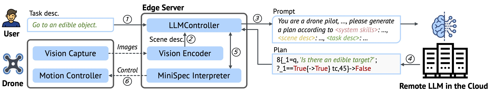
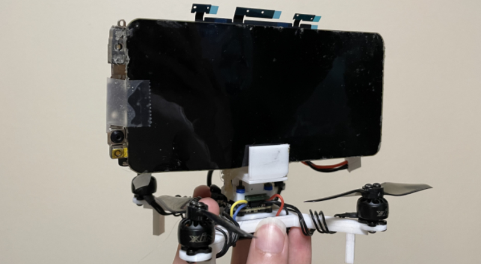
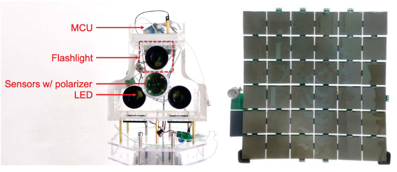

EDUCATIONS
-
2014 Sept. ~ 2016 Jun.
Undergraduate in Physics, Peking University, China
-
2016 Sept. ~ 2019 Jun.
Undergraduate in Computer Science and Technology, Peking University, China
-
2019 Aug. ~ 2019 Dec.
Ph.D. in Electrical and Computer Engineering, Rice University, United States
- 2020 Jan. ~ Now Ph.D. in Computer Science, Yale University, United States
PROJECTS
-

TypeFly: Flying Drones with Large Language Model
TypeFly is a robot control and planning system, leveraging the power of large language model (LLM) to generate a robot task plan according to user's natural language instruction and the scene.
See the project website here: -

POD: A Smartphone That Flies
POD is a new way to achievehands-free, eyes-up mobile computing. Unlike existing drone-carrieduser interfaces, POD features a smartphone-sized display and thecomputing and sensing power of a modern smartphone.
See our demo video here: -

RetroI2V
Conventional road signs convey very concise and static visual information to human drivers, and bear retroreflective coating forbetter visibility at night. RetroI2V exploits the retroreflective coating of road signs and establishes visible light backscat-tering communication (VLBC), and further coordinates multipleconcurrent VLBC sessions among road signs and approaching vehicles.
PUBLICATIONS
-
"Prompt Cache: Modular Attention Reuse for Low-Latency Inference",
arXiv, Nov 2023.
In Gim, Guojun Chen, Seung-seob Lee, Nikhil Sarda, Anurag Khandelwal, and Lin Zhong
-
"Panic Recovery in Rust-based Embedded Systems",
PLOS '23', Oct 2023.
Zhiyao Ma, Guojun Chen, and Lin Zhong
-
"POD: A Smartphone That Flies",
DroNet '21, Jun 2021.
Guojun Chen, Noah Weiner, and Lin Zhong
-
"Renovating Road Signs for Infrastructure-to-Vehicle Networking",
MobiCom '20, April 2020.
Purui Wang*, Lilei Feng*, Guojun Chen*, Chenren Xu, Yue Wu, Kenuo Xu, Guobin Shen, Kuntai Du, Gang Huang, and Xuanzhe Liu (*co-primary student authors)
-
"Demo: Long Range Retroreflective V2X Communication with Polarization-based Differential Reception",
SenSys '18, Nov 2018.
Guojun Chen, Purui Wang, Lilei Feng, Yue Wu, Xieyang Xu, Yang Shen, and Chenren Xu
-
"Demo: Software-defined Visible Light Backscatter Network",
MobiSys '18, Jun 2018.
Xieyang Xu, Yang Shen, Guojun Chen, Yue Wu, Lilei Feng, Qing Wang, and Chenren Xu
-
"Poster: A VLC Solution for Smart Parking",
MobiCom '17, Oct 2017.
Yang Shen, Guojun Chen, Xieyang Xu, Chenren Xu, Guobin Shen, and Jiaji Li
-
"PassiveVLC: Enabling Practical Visible Light Backscatter Communication for Battery-free IoT Applications",
MobiCom '17, Oct 2017.
Xieyang Xu, Yang Shen, Junrui Yang, Chenren Xu, Guobin Shen, Guojun Chen, and Yunzhe Ni
OTHERS
I like cooking, graphic design, photography, and video production. I used to make some promotional videos and posters for academic paper, events and animes.